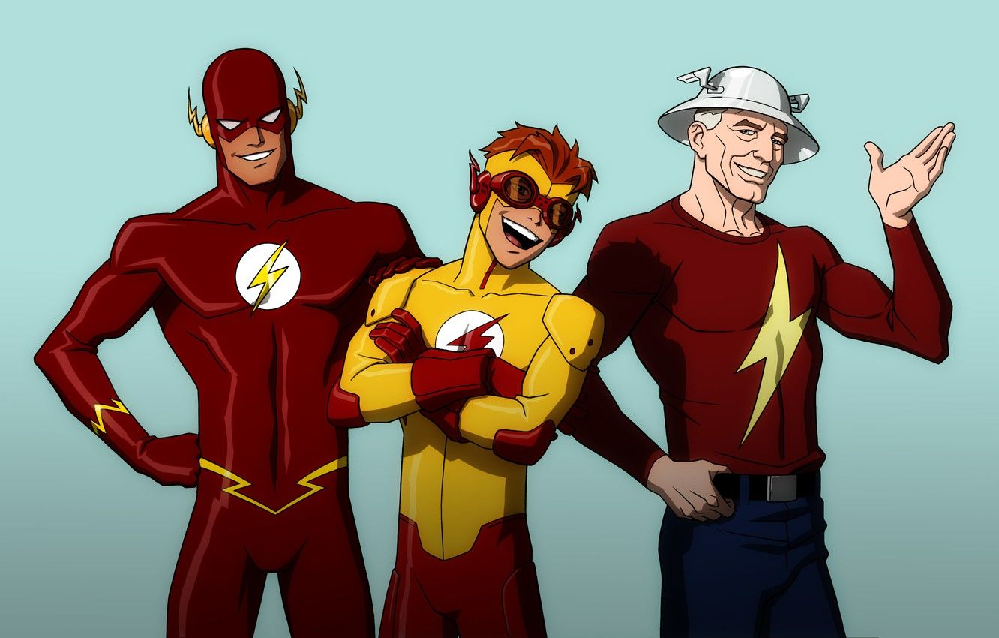

Os Flashs
Em primeiro lugar, é preciso dizer – para o público não iniciado nos quadrinhos – que o Flash, assim como vários outros heróis da DC Comics (Lanterna Verde é outro), já teve várias versões diferentes, com nomes, uniformes e histórias distintas. Mas unidos por um legado comum. A versãomais famosa do Flash é Barry Allen, um policial forense que vive em Central City, tal qual o personagem introduzido em Arrow. Porém, existem vários outros a usar esse nome: o primeiro foi Jay Garrick (criado em 1940), Allen foi o segundo; veio o terceiro, Wally West (em 1959); Bart Allen (em 1994); a lista prosseguiu indefinitivamente. Contudo, apesar de cada uma das outras versões do Flash ter feito sucesso de público em algum momento, Barry Allen é o detentor oficial do título e, apesar ter sido dado como morto por mais de duas décadas (entre 1986 e 2009), está de volta e mantém o posto firme.